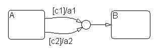

The accuracy of Doppler spread of the Rayleigh and Rician Fading Channel Blocks has been improved. The blocks now give better results for high sampling rates and small Doppler frequencies, as specified in communication standards such as WCDMA.
The following demos now generate code using Real Time Workshop:
dmt_simdvbt_simtstgraycodphasenoise_simdmt_alt_simtstconvcod
The passband FSK and CPM modulators have been modified to generate more accurate waveforms by performing FIR interpolation when upsampling. The FIR filters significantly reduce the levels of any spectral copies revealed by upsampling. They also introduce delay into the modulators.
The Reed-Solomon blocks now encode and decode signals correctly.
The new functionrsdecaccurately decodes Reed-Solomon codes containing up toterrors in each codeword. This new function replaces the earlier functionsrsdecoandrsdecode.
The new functions
rsencandrsdecoperate on the new Galois data type, which represents symbols using a decimal format. The formats used in the earlier functions,rsenco,rsencode,rsdeco, andrsdecode, are no longer supported. See "Updating Existing Reed-Solomon M-Code" in the Release Notes to learn how to convert your existing code data to the format used in the new coding functions.Also, the new functions enable you to choose whether parity bits appear at the beginning or end of each codeword.
insert functionfetch is fasterinsert functionThe insert function should perform approximately five (or
more) times faster than in the previous version.
In the Visual Query Builder, when you select an Oracle data source, the tables load more quickly than in the previous version of the Database Toolbox.
fetch is fasterWhen the data return format is set tonumericinsetdbprefsor in preferences, runningfetchreturns data more quickly than in the previous version.
In Version 2.2, running exec with a stored procedure did not
return results for some configurations. The problem has been fixed for
this version.
The Cumulative Sum block now behaves properly when given frame-based inputs and set to sum alongcolumns.In this situation, the block now computes the running sum of each column of a frame-based input, where the running sum is independent of the running sums of previous inputs.
To get the previous behavior for frame-based inputs when set to sum along columns, set the block to sum along
channels.
Sum, Gain, Mult blocks fast replacement TLC is now Big-endian compatible. They now return correct numeric results.
sos method no longer embeds filter gain in each sectionsos method no longer normalizes the filter after converting it to SOSFor Release 13, the online help text for filter design function
firlpnorm is now correct.
sos method no longer embeds filter gain in each sectionThe QFILTsosmethod no longer embeds the filter gain in each section. It now puts the filter gain into theScaleValueproperty of QFILT.
sos method no longer normalizes the filter after converting it to SOSThe QFILT sos method no longer normalizes the filter
coefficients after converting it to second-order sections, therefore care
should be taken to avoid overflows by adjusting the coefficient format of
the
filter.
addvar and the command line APIaddvar and the command line APIIn Release 12,
addvarsystematically initialized the new variable with 3 membership functions, thus breaking the command line API, where it is common first to add the variable and then define the membership functions.Release 13 adds logic to allow GUIs to create 3 default membership functions without interfering with command line calls.
The cases a-b or b=c in trimmf (a-b and c=d in trapmf) caused Divide by Zero and improper results in Simulink. These blocks have been reimplemented using the IF block to always produce answers consistent with the M file implementation
cpselect would ask to save points when it wasn't necessarycpselect in point-prediction modedicomread and private datadicomread and signed data from DICOM filesfspecial 'laplacian' and 'unsharp' optionsgray2ind returns the correct outputimadjust no longer errors if passed degenerate inputsimerode handles binary erosion correctlyimhist on IRIX with input containing NaNsimnoise with the Poisson optionpixval could give a confusing error message for figures with normalized unitsimshowdicomread and dicominfocpselectedge function.cpselect would ask to save points when it wasn't necessaryWhen you closed the contol-point selection tool (cpselect),
it
would ask if you wanted to save control points, even if you had already
done so. This has been fixed.
cpselect in point-prediction modeWhen using the control-point selection tool (cpselect) in
point-prediction
mode, sometimes a stray control point would appear that could not be
deleted. This has been fixed.
dicomread and private dataThe dicomread function no longer fails when reading from a
file with private data using "explicit VR" syntax.
dicomread and signed data from DICOM filesThe dicomread function used no longer fails when reading
signed data from pixels which were not "normal" lengths.
fspecial 'laplacian' and 'unsharp' optionsThe fspecial function now accepts a parameter value of 0
for the 'laplacian' and 'unsharp' options.
gray2ind returns the correct outputIf the input image togray2indwas logical, then the output was also logical. Thegray2indfunction now returns the correct output in such situations.
imadjust no longer errors if passed degenerate inputsA call toimadjustwith identical low and high limits, such as
imadjust(A,[b b],[]),
caused
imadjustto error out. The problem has been fixed by providing default limits when the input limits are degenerate.
imerode handles binary erosion correctlyPrior to Release 13, when performing binary erosion with a decomposed
structuring element, such
as strel(ones(5,5)), the first 32 rows of the output image
could be wrong. This has been fixed.
imhist on IRIX with input containing NaNsThe function imhist no longer causes a segmentation violation
on IRIX with
input containing NaNs.
imnoise with the Poisson optionThe function imnoise now returns a correctly-
sized output instead of a column vector when using the Poisson option.
pixval could give a confusing error message for figures with normalized unitsTurning onpixvalfor a figure in normalized units could produce a confusing error message. Thepixvalfunction now issues a more informative error message if the figure is not in pixel units.
imshowPrior to Release 13, if invalid input was passed toimshow, it would sometimes error out after creating an invisible figure object. Subsequent calls toimshowwould appear to not do anything, because the images were being sent to the invisible figure. The problem has been fixed by adding additional input checking toimshow.
dicomread and dicominfoThedicomreadanddicominfofunctions parse files quicker than in the past, especially for files with a lot of metadata.
cpselectThe legend box for the control-point selection tool (cpselect)
was
unresizable, which sometimes caused the title bar to be unreadable. This
has been fixed.
edge function.In the Canny algorithm in the edge function, Gaussian
smoothing should be run
perpendicular to the direction of differentiation. This has been implemented.
The RLE decoder used by dicomread used to only work for 8-bit
grayscale images (and only for certain ones at that). The decoder now
correctly handles all bit depths and image types.
The round-off problem that caused the return value
of the distance function to include a small, nonzero imaginary
part for certain inputs has been fixed.
Version 1.3 fixes setpostn to handle longitude limits that
straddle the
prime meridian.
A typographical error in defaultm in the false northing for
Universal Transverse Mercator (UTM) has been corrected. That error had
caused incorrect UTM/geographic conversions for points in the southern
hemisphere.
Padding is added as needed in etopo5 when reading different
numbers of
elements from the northern and southern hemisphere files.
'cubic' method in griddata no longer produces segmentation faultdiff function has improved handling of negative ordereigs(A,B,k,sigma) for sparse B now convergesfilter function has better support for multidimensional datalog10(10^i) now returns i, exactlylsqr now converges for rectangular systemssqrtm now returns correct results for singular Hermitian matrix'cubic' method in griddata no longer produces segmentation faultPreviously, the'cubic'method of thegriddatafunction would occasionally encounter a segmentation fault. This no longer happens.
diff function has improved handling of negative orderPreviously, MATLAB encountered a segmentation fault when computing
diff(sparse([1;1]),-1). Now, an error message is displayed if
the order is not a real positive integer.
eigs(A,B,k,sigma) for sparse B now convergesPreviously,eigs(A,B,k,sigma)for sparse
Band non-scalarsigma(sigmanot equal to'SM'either) applied a reordering toBbefore factoring it for use in repeated solves. Unfortunately, the reordering was not correctly applied in the subsequent solves and as a resulteigsdid not converge.The reordering is now being applied correctly and
eigsnow converges in this case.
filter function has better support for multidimensional dataFor multidimensional inputs, filter sometimes produced
incorrect error messages or the wrong results. This no longer happens.
log10(10^i) now returns i, exactlyPreviously,log10was computed directly as log(x) / log(10), where log is the natural logarithm. The error in this was particularly visible in computations of the formlog10(10^i), for example:>> log10(1e6) ans = 5.999999999999999e+00Now,
log10does some additional scaling to computelog10(10^i)to the nearest bit.
lsqr now converges for rectangular systemsPreviously,lsqronly converged for square, consistent systemsA*x=band returned a solutionxwherenorm(b-A*x)was small.Now,
lsqralso converges for rectangular systems and returns a solutionxwherenorm(b-A*x)is not necessarily small, but is minimized, and in factnorm(A'*(b-A*x))is small.
sqrtm now returns correct results for singular Hermitian matrixA matrix square root always exists for Hermitian matrices. Previously,sqrtm(X)sometimes returned a matrix of allNaNs for matricesXthat were both Hermitian and singular. Nowsqrtm(X)returns the correct results for these matrices.sqrtmis now also faster for Hermitian matrices.
The Array Editor can now show arrays with more than 10,000 elements. It does not support arrays with more than 65,536 (2^16) elements.
In previous releases, the Import Wizard was sometimes slow when opening large files, but the problem has been fixed in this version.
LU factorizations for full matrices now use a modified version of the LAPACK LU factorization routines and return more accurate results when encountering denormal pivots (i.e., smaller than
realmin). In previous versions, results may have includedNaNs; for example:A = [2^(-1050) 2^(-1050);0 0] [L,U] = lu(A) A = 1.0e-316 * 0.8289 0.8289 0 0 L = 1 0 NaN 1 U = 1.0e-316 * 0.8289 0.8289 0 NaNIn the current version, results are more accurate. For example, using
Aas above,[L,U] = lu(A) L = 1 0 0 1 U = 1.0e-316 * 0.8289 0.8289 0 0This improved accuracy carries with it a performance loss for any operations that use
luorlu-based\(backslash) for factorization of full matrices.
There is no longer a performance problem with more than 1000 variables open in the Workspace browser.
Modal dialogs on Windows platforms have been improved in terms of common appearance and stability. In Release 12, MATLAB would sometimes lock up due to modal dialogs. In Release 13, this is fixed.
- Serial port objects now work with the baud rates 128,000 and 256,000 along with all other standard baud rates listed in the BaudRate property help.
- MATLAB can now find serial ports if the MATLAB root directory contains an underscore.
- A memory leak no longer occurs when opening and closing the serial port connection.
- On Windows, serial port objects now recognize ports greater than COM4.
- On Solaris, there is no restriction on the number of times that the serial port can be opened.
- On Linux, there is a significant speed increase when writing data to the serial port.
When you runlookfor, results will now automatically display in the Command Window. You no longer need to press Ctrl+C to display results. Whilelookforis running, the status bar showsBusy.
You can now rename variables from within the Workspace Browser. Right-click a variable name, select Rename from the context menu, and edit the name.
The 3-D and 4-D design views will now correctly display all of the points in a design. Previously, for some factor ranges points at the edges of the graph, limits were not displayed.
Breakpoint filling using "ShareCurvThenAve" now works correctly in all cases and is significantly faster than in the previous version.
You can now convert all Variable Dictionary items into an alias of another Variable Dictionary item. Previously, this would cause an error in some circumstances where the items were being used elsewhere in the Cage project.
The Cross Section view of the Model Selection window now displays the correct model error while the input factor lines are being dragged. Previously, the error shown while dragging the line was different from that shown when the mouse button was released.
1-D tables in Cage now correctly show the difference between two versions in the history.
Re-fitting an RBF model after pruning now uses the correct value for log10 (GCV).
You can now import large amounts of data from Excel into a Dataset. Previously, attempting to do this caused an error to occur.
When you add new data to a testplan that already has models, any sweep notes which have been made are now saved when the models are re-fitted.
Optimal designs with stratified candidate sets will now correctly fail if there are not enough stratified levels to support the model. Previously, small numerical errors allowed the optimisation to proceed, but poor conditioning meant that the optimal value oscillated up and down.
Previously, if a local sweep was removed from fitting at the local level, the global response features only showed the removed sweep in their list of removed points if one or more outliers was selected and removed at the global level. All removed points are now shown at the global response feature level all of the time.
You can now create large Latin Hypercube designs from the Classical Design Browser without MATLAB appearing to hang. Previously a full set of search iterations was erroneously done before the expected waitbar appeared and the search commenced.
Stratified Latin Hypercube designs now choose their stratified levels so they split the stratified dimension into exactly equal sections. Previously, the levels were "snapped" to the nearest non-stratified level, which depends on the total number of points in the design. This meant that some levels were shifted down slightly and others up.
You can now view Datasets that consist entirely of imported data. Previously, viewing these datasets caused Cage to crash.
You can now delete designs from anywhere in the Design Editor tree without causing errors. Previously, if your best design was at the end of the design tree and you deleted a design, you received an error when you closed the Design Editor.
fminconThe functionfminconwould in some small number of cases hang when the problem was ill-posed or ill-conditioned. In these cases,fminconno longer hangs.
aryule order limit increasedcremez example fixedcheb1ord, cheb2ord, ellipordaryule order limit increasedThe model order in the aryule function is no longer limited
to
half the input signal length. The order now can be up to the signal
length.
cremez example fixedThe second example on the cremez reference page has been
updated and now works correctly.
cheb1ord, cheb2ord, ellipordFor the digital bandstop case, the frequency values returned from thecheb1ord,cheb2ord, andellipordfunctions are no longer changed from the input frequency values.
The pole/zero plot in FDATool and FVTool now can display multiple roots at a single plot point.
The scaling of the magnitude response portion of the Magnitude and Phase Analysis plot in both FDATool and FVTool was incorrect for some filters. It now is scaled correctly.
Print Preview, when no markers are displayed in the SPTool Filter Viewer, now works correctly.
mdl filemdl fileThemdlfile now has a new section, "BlockParameterDefaults." The default values for the parameters used by the block types present in the model are written into this section. Then, an individual block instance's parameter values are written into themdlfile only if they differ from the default. This technique reduces the size of themdlfile, as well as reducing the file load time. A block diagram parameter,SaveDefaultBlockParams , exists to control whether or not the parameter defaults are saved to the file. By default it is set to true.
Breaking disabled library links from the command-line now works.
In previous releases, adding signals to a bus or otherwise changing its structure required that you update any Bus Selector blocks that select signals from the bus. In the current release, you need to update the Bus Selector only if it selects signals that no longer exist or no longer have unique names.
The Configurable Subsystem has been made faster and more robust when changing block choices. This is especially noticeable for large subsystems.
Previous releases of Simulink prevented you from creating Simulink data object classes in the MATLAB directory or any of its subdirectories. The current release allows you to create classes in the
worksubdirectory of the MATLAB root directory.
In Release 12.1, a Dot Product block in a loop cannot determine its port dimension and hence causes a simulation error. Now the block assigns a default dimension setting to the port, thereby avoiding the simulation error.
Releasing the left mouse button over the Simulink menu bar when drag- selecting multiple blocks caused UNIX to lock up. This has been fixed.
Grouping blocks in Simulink into a subsystem caused a divide-by-zero error if the blocks were too close to the top or left edge of the model. This has been fixed.
The option for using a fast index search algorithm that relies on evenly spaced breakpoints for look-up tables was enhanced to better detect evenly spaced breakpoints within a tolerance ofvalue*eps. Note that breakpoint expressions such as[-5:0.1:5]may still need to be written as0.1*[-50:50]to generate a dataset that is evenly spaced within the required tolerance. The linear and binary search options will of course still work on any strictly increasing breakpoint data set (not just evenly spaced ones).
You can now scroll Simulink diagrams around using the keyboard by pressing the Ctrl key in conjunction with any of the arrow keys. This is sometimes more convenient than manipulating the scroll bars with the mouse.
In previous releases, pressing the Esc key while dragging a block or performing other types of drag operations caused MATLAB and Simulink to become unresponsive. In the current release, pressing the Esc key will abort the drag operation.
For multirate models that are simulated to very large times, Simulink would eventually miss a sample hit for one of the rates. This would cause Simulink to hang. This has now been fixed and Simulink no longer hangs.
The behavior of the PreLook-Up Index Search block (index only mode) and the Look-Up Table n-D block (in flat interpolation mode) were changed to return the last index in the table when the input value is at or above the last breakpoint value as this is more useful than the previous behavior. For the Look-Up Table n-D block, this is done on an individual dimension basis. In previous versions (Simulink 4.0 and 4.1), the index search would deliberately return the next to last index and the n-D flat look-up would deliberately return the next to last table value even when the input value was at or above the last breakpoint.
If changes are made to a linked block, propagating such changes to the library via the Link options menu now does not result in recursive links.
The pulse generator block would somtimes report that the computed sample time is not an integer multiple fo the fixed step size when, in fact, it was. This has been fixed.
Scope blocks with "Save To Workspace" variable names longer than the maximum MATLAB variable length (currently 31 characters) used to crash Simulink in unpredictable ways during simulation. Such variable names will no longer crash Simulink, though they will generate an error.
On Unix platforms, a segmentation violation would occur if you added or deleted blocks in a Simulink model while the Model Browser was open. This has been fixed.
The "Undefined variable names" error is no longer displayed when selecting Menu->Tools->Coverage Settings without an available Simulink license.
Library subsystems containing self-modifying masked blocks no longer have to be marked as MaskSelfModifiable for the linked blocks to be connected properly.
In previous releases, holding down the Shift key and dragging a block inside a reference block (i.e., a library link) disconnects the block's signal lines and brings up a dialog box asking if you would like to disable the link. In the current release, Simulink does not disconnect the lines.
In the previous release, you could not useget_paramorset_paramto set or get the value of the CurrentBlock parameter in the command-line debugger until you selected a block. The Simulink command-line debugger now allows you to set and get the value of this parameter without having to first select a block with the mouse.
In previous releases, if a non-inlined S-function used non-double parameter then the model would error out while trying to generate accelerator code. This restriction has been relaxed.
Under certain circumstances with the Simulink Accelerator, the generated code of models containing enable, if and case subsystems could be activiated during minor time steps, causing incorrect outputs. This has been fixed.
The Simulink Accelerator no longer requires a Real-Time Workshop license to function properly.
The Simulink Accelerator now supports use of the gcc compiler on UNIX systems.
pprfn failed when no breaks need be insertedsplinetool now tracked properlyspcol for various unusual inputs correctedpprfn failed when no breaks need be insertedpprfn now properly returns the function unchanged in case all
the
additional breaks are already breaks for the function.splinetool now tracked properlyEach spline fit now remembers the data to which it was fit. If, at some point, you make a previously constructed spline fit the current one, then also the data currently showing get changed to the data to which that spline was fit.
spcol for various unusual inputs correctedspcol now provides a correct sparse version of its output
even for knot
sequences with unusual end knot multiplicities, and when some sites lie to
the right of the last knot while some site appears more than once.
None of these cases is likely to occur in ordinary spline work since, in
all of them, the resulting matrix is not invertible.Code generation for an RTW target no longer fails when the chart includes output array data initialized from the workspace. (Occurred in Versions 3.0 through 4.1.1.)
Code generated for an RTW target now can includes any custom code entered by a user. (Occurred in Versions 4.1 through 4.1.1.)
Hierachical Printing invoked from a Simulink window when the charts were closed no longer causes transition label positions to change and no longer causes incorrect printouts. (Occurred in Version 4.0 through 4.1)
In models containing an infinite flow graph loop, you can now stop simulation by using Ctrl-C or the Stop Simulation button in the diagram editor and debug window.
The Stateflow parser did not flag mismatched dimensions or array lengths in vectorized assignments such asx = y, wherexandyare vector data with different dimensions and/or lengths. This no longer causes crashes during runtime. (Occurred in Versions 2.0 through 4.1.)
Models containing Stateflow charts must have file names limited to 25 characters or less. When you try to save a model with more characters, an error results. If you try to load a model with more than 25 characters in its file name, a warning results telling you to reduce the number of characters in the file name to 25 or less.
Certain uses of the pointer and address operators ('->' and '&', respectively) in state and transition actions used to cause uncompilable generated code. (Occurred in Versions 3.0 through 4.1.1). This has been fixed.
The Stateflow Search and Replace Tool no longer errors out in the presence of LaTeX format strings in Stateflow annotations. (Occurred in Versions 4.0.2 through 4.1.)
When a grouped state containing "smart" transitions was resized, the transitions in the newly resized state are now displayed properly. (Occurred in Version 4.1)
Transition actions are now handled correctly for a confluence of transitions into a single destination such as the junction shown below:

During simulation an early return from an event broadcast from a transition no longer leaves that transition highlighted for the rest of the simulation. (Occurred in Versions 3.0 through 4.1.)
Charts containing unstructured flow graphs no longer cause compilation errors during Real-Time Workshop builds.
All graphical functions with a return value and unusual flow graph topology now include a final return statement in the generated code.
Optimization of simple "if" conditional statements no longer causes incorrect code to be generated. (Occurred in Version 4.2)
Optimization of state exit functions no olonger causes incorrect code to be generated. (Occurred in Version 4.2)
Passing chart input data to graphical functions no longer causes code generation failures for Real-Time Workshop targets.
Using min/max macros in Stateflow charts caused compilation failures during RTW builds of ert/grt embedded targets. This has been fixed.
cluster function usable with larger problemsdendrogram graph corrected for plotting a subset of nodespdist more efficient for large data setsranksum uses a continuity correctionregstats functionclassifynbin*) functions no longer require an integer R valuecluster function usable with larger problemsTheclusterfunction is no longer recursive, so it no longer encounters a recursion limit when it is applied to a large data set. Consequently,clusternow succeeds with larger data sets than in the past.
dendrogram graph corrected for plotting a subset of nodesIn a plot of a subset of the nodes in a cluster tree, the
dendrogram function now adjusts the Y axis limits to scale
the
tree properly, and it
shows the correct distance values. Before Version 4.0 (Release 13), it was
subtracting an
offset to position the minimum distance value near zero, and therefore it
was not possible to read the correct distance values from the Y axis
of the resulting plot.
pdist more efficient for large data setsThe pdist function now makes more efficient use of memory, so
it can be
used on larger
problems than in previous releases.
ranksum uses a continuity correctionThe ranksum function uses an exact calculation for small
sample sizes, and
a normal approximation for larger sample sizes. Starting in Version 4.0
(Release 13),
the normal approximation now includes a continuity correction.
regstats functionIn Version 3.0 and earlier of the Statistics Toolbox, the covratio statistic was calculated incorrectly. The calculation was fixed in Version 3.1. This statistic measures the ratio of the generalized variance of the coefficient estimates without a given row, to the generalized variance using all the data.
classifyThe algorithm that was previously implemented inclassifyused the Mahalanobis distance between sample points and training groups, with stratified estimates of covariance. The new implementation adds the standard algorithms for linear (default) and quadratic discriminant analysis. Use thetype'mahalanobis'in the new version to duplicate the behavior of the previous version.
nbin*) functions no longer require an integer R valueConsistent with a more general interpretation of the negative binomial, these functions now accept any positive value, including nonintegers, for the size parameterR:nbincdf,nbininv,nbinpdf,nbinrnd,nbinstats.
cmorwavf function inputsstd2 function in the Wavelet and Image Processing Toolboxeswptree object from a MAT-filewpdec function with a user-defined functioncmorwavf function inputsThe two last input arguments are no longer reversed in the
cmorwavf function.
std2 function in the Wavelet and Image Processing ToolboxesYou no longer get slightly different results from the std
(compute
standard deviation of matrix elements) function in the Image Processing
Toolbox and the Wavelet Toolbox.
wptree object from a MAT-filewptreehas been updated so that awptreeobject can be loaded from a MAT-file.
An error message stating that the data must be real is displayed when you try to load complex data into the Continuous Wavlet 1-D.
wpdec function with a user-defined functionUsingwpdecwith a user-defined function no longer produces errors that were caused bywpdec's use ofwentropy.
Previously, when you created a Stand-alone application, polling mode did not start. Now, it does.